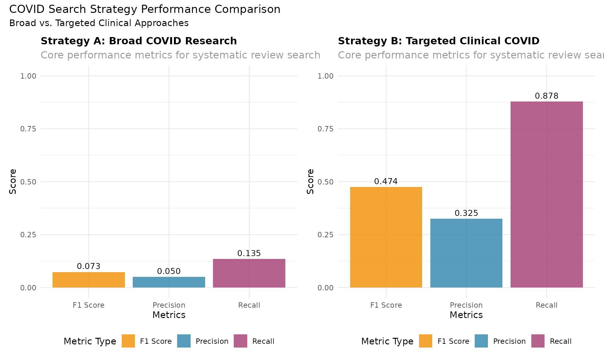
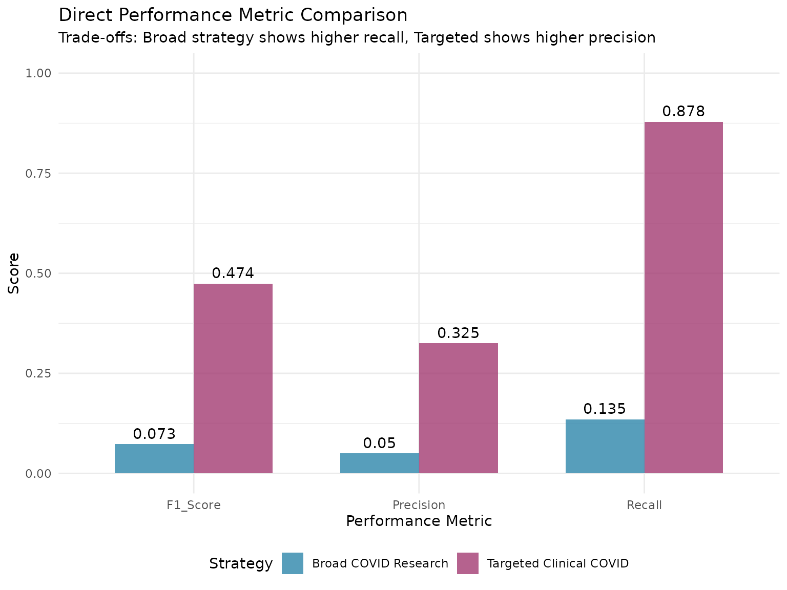
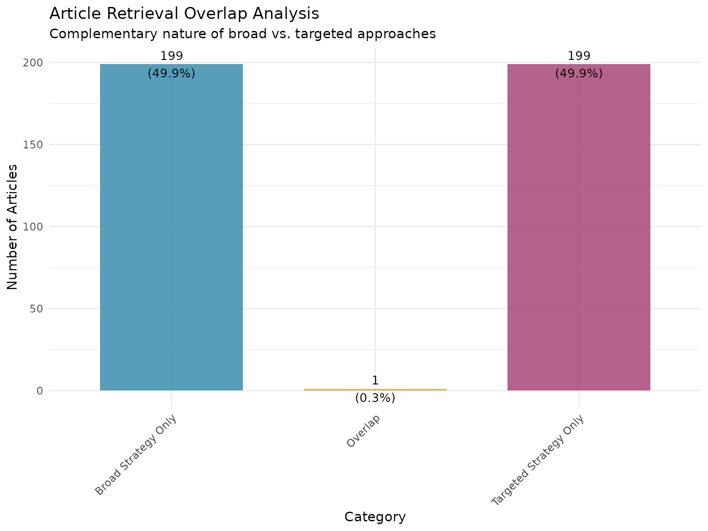
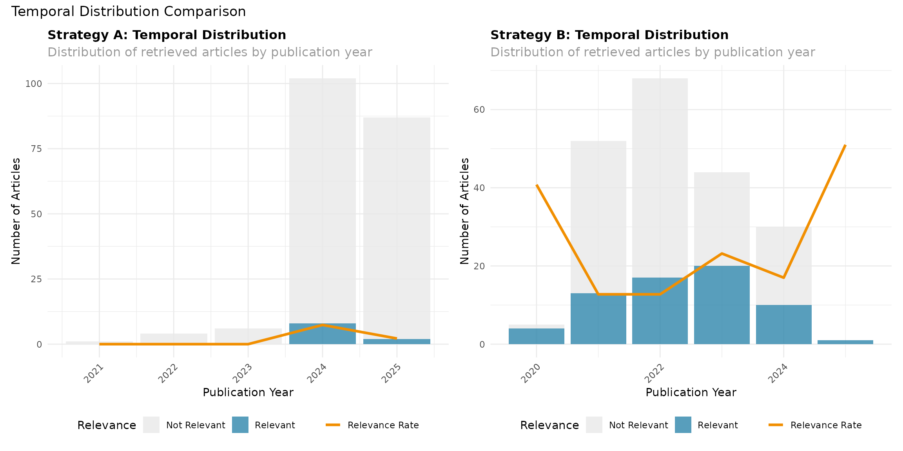
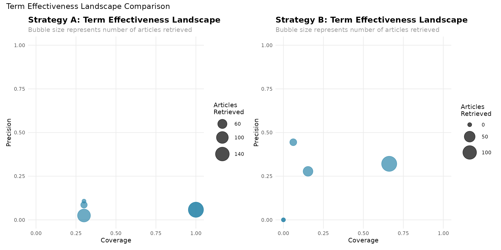
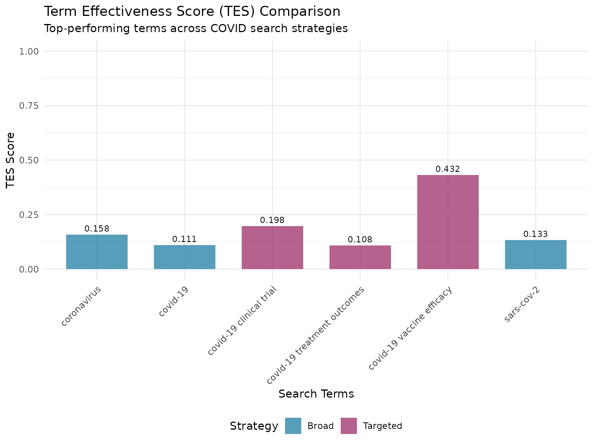

Comparing Search Strategies: A Comprehensive Guide
searchAnalyzeR Package
2025-11-03
Source:vignettes/Comparing_Search_Strategies_with_searchAnalyzeR.Rmd
Comparing_Search_Strategies_with_searchAnalyzeR.RmdIntroduction
This vignette demonstrates how to use the searchAnalyzeR package to compare different search strategies for systematic reviews. We’ll walk through a comprehensive example comparing two complementary approaches for COVID-19 research: a broad strategy capturing general research across all domains versus a targeted strategy focusing on high-quality clinical evidence.
Learning Objectives
By the end of this vignette, you will be able to:
- Design and implement different search strategies
- Perform statistical comparisons between strategies
- Analyze individual term effectiveness
- Generate comprehensive visualizations
- Make evidence-based recommendations for strategy selection
Why Compare Search Strategies?
Different search strategies serve different purposes in systematic reviews:
- Broad strategies maximize recall but may reduce precision
- Targeted strategies increase precision but may miss relevant studies
- Combined strategies can leverage the strengths of both approaches
Understanding these trade-offs helps researchers select optimal search approaches for their specific needs.
Setup and Package Loading
library(searchAnalyzeR)
library(ggplot2)
# Load additional packages for enhanced visualizations
if (requireNamespace("patchwork", quietly = TRUE)) {
library(patchwork)
}Defining Search Strategies
We’ll compare two strategically different approaches for COVID-19 research that demonstrate clear trade-offs between precision and recall.
Strategy A: Broad COVID Research Strategy
This strategy uses general terms to capture COVID-19 research across all domains.
strategy_A <- list(
name = "Broad COVID Research Strategy",
terms = c(
"covid-19",
"coronavirus",
"sars-cov-2",
"pandemic",
"covid"
),
description = "Broad approach capturing general COVID-19 research across all domains",
databases = c("PubMed"),
date_range = as.Date(c("2020-01-01", "2024-12-31")),
filters = list(
language = "English",
article_types = c("Journal Article", "Review", "Clinical Trial")
),
search_date = Sys.time()
)
cat("Strategy A (Broad COVID Research):\n")
#> Strategy A (Broad COVID Research):
cat("Terms:", paste(strategy_A$terms, collapse = " OR "), "\n")
#> Terms: covid-19 OR coronavirus OR sars-cov-2 OR pandemic OR covid
cat("Description:", strategy_A$description, "\n")
#> Description: Broad approach capturing general COVID-19 research across all domainsStrategy B: Targeted Clinical COVID Strategy
This strategy focuses specifically on high-quality clinical evidence.
strategy_B <- list(
name = "Targeted Clinical COVID Strategy",
terms = c(
"covid-19 clinical trial",
"covid-19 randomized controlled trial",
"covid-19 systematic review",
"covid-19 vaccine efficacy",
"covid-19 treatment outcomes"
),
description = "Targeted approach focusing on high-quality clinical evidence",
databases = c("PubMed"),
date_range = as.Date(c("2020-01-01", "2024-12-31")),
filters = list(
language = "English",
article_types = c("Journal Article", "Review", "Clinical Trial")
),
search_date = Sys.time()
)
cat("Strategy B (Targeted Clinical COVID):\n")
#> Strategy B (Targeted Clinical COVID):
cat("Terms:", paste(strategy_B$terms, collapse = " OR "), "\n")
#> Terms: covid-19 clinical trial OR covid-19 randomized controlled trial OR covid-19 systematic review OR covid-19 vaccine efficacy OR covid-19 treatment outcomes
cat("Description:", strategy_B$description, "\n")
#> Description: Targeted approach focusing on high-quality clinical evidenceExecuting the Searches
Now we’ll execute both search strategies and retrieve articles from PubMed.
# Execute Strategy A
cat("=== EXECUTING STRATEGY A: Broad COVID Research ===\n")
#> === EXECUTING STRATEGY A: Broad COVID Research ===
results_A <- search_pubmed(
search_terms = strategy_A$terms,
max_results = 200,
date_range = strategy_A$date_range
)
#> PubMed Query: ( "covid-19"[Title/Abstract] OR "coronavirus"[Title/Abstract] OR "sars-cov-2"[Title/Abstract] OR "pandemic"[Title/Abstract] OR "covid"[Title/Abstract] ) AND ("2020/01/01"[Date - Publication] : "2024/12/31"[Date - Publication]) AND English [Language]
#> Found 200 articles
#> Retrieving batch 1 of 4
#> Retrieving batch 2 of 4
#> Retrieving batch 3 of 4
#> Retrieving batch 4 of 4
cat("Strategy A completed. Retrieved", nrow(results_A), "articles.\n\n")
#> Strategy A completed. Retrieved 200 articles.
# Execute Strategy B
cat("=== EXECUTING STRATEGY B: Targeted Clinical COVID ===\n")
#> === EXECUTING STRATEGY B: Targeted Clinical COVID ===
results_B <- search_pubmed(
search_terms = strategy_B$terms,
max_results = 200,
date_range = strategy_B$date_range
)
#> PubMed Query: ( "covid-19 clinical trial"[Title/Abstract] OR "covid-19 randomized controlled trial"[Title/Abstract] OR "covid-19 systematic review"[Title/Abstract] OR "covid-19 vaccine efficacy"[Title/Abstract] OR "covid-19 treatment outcomes"[Title/Abstract] ) AND ("2020/01/01"[Date - Publication] : "2024/12/31"[Date - Publication]) AND English [Language]
#> Found 200 articles
#> Retrieving batch 1 of 4
#> Retrieving batch 2 of 4
#> Retrieving batch 3 of 4
#> Retrieving batch 4 of 4
cat("Strategy B completed. Retrieved", nrow(results_B), "articles.\n")
#> Strategy B completed. Retrieved 200 articles.Data Processing and Standardization
Before analysis, we need to standardize the search results and remove duplicates.
# Standardize both result sets
cat("Standardizing search results...\n")
#> Standardizing search results...
standardized_A <- std_search_results(results_A, source_format = "pubmed")
standardized_B <- std_search_results(results_B, source_format = "pubmed")
# Add strategy identifiers
standardized_A$strategy <- "Broad_COVID_Research"
standardized_B$strategy <- "Targeted_Clinical_COVID"
# Detect duplicates within each strategy
dedup_A <- detect_dupes(standardized_A, method = "exact")
dedup_B <- detect_dupes(standardized_B, method = "exact")
# Report deduplication results
cat("Strategy A - Total:", nrow(dedup_A),
"Unique:", sum(!dedup_A$duplicate),
"Duplicates:", sum(dedup_A$duplicate), "\n")
#> Strategy A - Total: 200 Unique: 200 Duplicates: 0
cat("Strategy B - Total:", nrow(dedup_B),
"Unique:", sum(!dedup_B$duplicate),
"Duplicates:", sum(dedup_B$duplicate), "\n")
#> Strategy B - Total: 200 Unique: 200 Duplicates: 0Creating a Gold Standard
For demonstration purposes, we’ll create an enhanced gold standard using high-confidence indicators of research quality.
# Filter out duplicates for analysis
unique_A <- dedup_A[!dedup_A$duplicate, ]
unique_B <- dedup_B[!dedup_B$duplicate, ]
# High-confidence terms that indicate quality COVID research
high_confidence_patterns <- c(
"randomized", "controlled trial", "systematic review", "meta-analysis",
"clinical trial", "vaccine efficacy", "treatment outcome", "placebo",
"double-blind", "multicenter", "cohort study", "case-control"
)
# Function to count high-confidence patterns
count_patterns <- function(data, patterns) {
combined_text <- tolower(paste(data$title, data$abstract, sep = " "))
sapply(combined_text, function(text) {
sum(sapply(patterns, function(pattern) grepl(pattern, text, fixed = TRUE)))
})
}
# Articles that appear in both strategies (high confidence due to overlap)
overlap_ids <- intersect(unique_A$id, unique_B$id)
# Articles with multiple high-confidence patterns
pattern_counts_A <- count_patterns(unique_A, high_confidence_patterns)
pattern_counts_B <- count_patterns(unique_B, high_confidence_patterns)
multi_pattern_A <- unique_A$id[pattern_counts_A >= 2]
multi_pattern_B <- unique_B$id[pattern_counts_B >= 2]
# Articles with "systematic review" or "meta-analysis" in title
systematic_review_pattern <- "systematic review|meta-analysis"
systematic_A <- unique_A$id[grepl(systematic_review_pattern, tolower(unique_A$title))]
systematic_B <- unique_B$id[grepl(systematic_review_pattern, tolower(unique_B$title))]
# Combine for gold standard
gold_standard_ids <- unique(c(
overlap_ids, # High confidence: found by both strategies
systematic_A, # Very high confidence: systematic reviews from A
systematic_B, # Very high confidence: systematic reviews from B
multi_pattern_A, # High confidence: multiple quality indicators from A
multi_pattern_B # High confidence: multiple quality indicators from B
))
cat("Gold standard created with", length(gold_standard_ids), "high-confidence relevant articles\n")
#> Gold standard created with 70 high-confidence relevant articles
cat("- Overlap between strategies:", length(overlap_ids), "articles\n")
#> - Overlap between strategies: 1 articles
cat("- Systematic reviews Strategy A:", length(systematic_A), "articles\n")
#> - Systematic reviews Strategy A: 2 articles
cat("- Systematic reviews Strategy B:", length(systematic_B), "articles\n")
#> - Systematic reviews Strategy B: 15 articlesPerformance Analysis
Now we’ll analyze the performance of both strategies using the SearchAnalyzer class.
# Initialize analyzers for both strategies
unique_A_ids <- unique_A$id
unique_B_ids <- unique_B$id
analyzer_A <- SearchAnalyzer$new(
search_results = unique_A,
gold_standard = gold_standard_ids,
search_strategy = strategy_A
)
analyzer_B <- SearchAnalyzer$new(
search_results = unique_B,
gold_standard = gold_standard_ids,
search_strategy = strategy_B
)
# Calculate comprehensive metrics
metrics_A <- analyzer_A$calculate_metrics()
metrics_B <- analyzer_B$calculate_metrics()
# Display key metrics
cat("STRATEGY A (Broad COVID Research) PERFORMANCE:\n")
#> STRATEGY A (Broad COVID Research) PERFORMANCE:
cat("Total Articles Retrieved:", nrow(unique_A), "\n")
#> Total Articles Retrieved: 200
cat("Precision:", round(metrics_A$precision_recall$precision, 3), "\n")
#> Precision: 0.03
cat("Recall:", round(metrics_A$precision_recall$recall, 3), "\n")
#> Recall: 0.086
cat("F1 Score:", round(metrics_A$precision_recall$f1_score, 3), "\n")
#> F1 Score: 0.044
cat("\nSTRATEGY B (Targeted Clinical COVID) PERFORMANCE:\n")
#>
#> STRATEGY B (Targeted Clinical COVID) PERFORMANCE:
cat("Total Articles Retrieved:", nrow(unique_B), "\n")
#> Total Articles Retrieved: 200
cat("Precision:", round(metrics_B$precision_recall$precision, 3), "\n")
#> Precision: 0.325
cat("Recall:", round(metrics_B$precision_recall$recall, 3), "\n")
#> Recall: 0.929
cat("F1 Score:", round(metrics_B$precision_recall$f1_score, 3), "\n")
#> F1 Score: 0.481Statistical Comparison
We’ll perform statistical testing to determine if the differences between strategies are significant.
# Compare strategies using McNemar's test
comparison_result <- compare_strategies(
strategy1_results = unique_A_ids,
strategy2_results = unique_B_ids,
gold_standard = gold_standard_ids,
test_type = "mcnemar"
)
cat("STATISTICAL COMPARISON RESULTS:\n")
#> STATISTICAL COMPARISON RESULTS:
cat("Test Used:", comparison_result$test, "\n")
#> Test Used: McNemar's Test
cat("P-value:", round(comparison_result$p_value, 4), "\n")
#> P-value: 0
cat("Statistically Significant:", comparison_result$significant, "\n")
#> Statistically Significant: TRUE
if (!is.null(comparison_result$difference)) {
cat("\nPERFORMANCE DIFFERENCES (B - A):\n")
cat("Precision Difference:", round(comparison_result$difference$precision_diff, 3), "\n")
cat("Recall Difference:", round(comparison_result$difference$recall_diff, 3), "\n")
cat("F1 Score Difference:", round(comparison_result$difference$f1_diff, 3), "\n")
}
#>
#> PERFORMANCE DIFFERENCES (B - A):
#> Precision Difference: 0.295
#> Recall Difference: 0.843
#> F1 Score Difference: 0.437Strategy Complementarity Analysis
Let’s analyze how well the strategies complement each other.
# Calculate detailed strategy comparison metrics
strategy_comparison <- calc_strategy_comparison(
strategy1_results = unique_A_ids,
strategy2_results = unique_B_ids,
gold_standard = gold_standard_ids
)
cat("ENHANCED OVERLAP ANALYSIS:\n")
#> ENHANCED OVERLAP ANALYSIS:
cat("Total Unique Articles (Combined):", strategy_comparison$overlap_analysis$total_unique, "\n")
#> Total Unique Articles (Combined): 399
cat("Overlap Between Strategies:", strategy_comparison$overlap_analysis$overlap_count, "\n")
#> Overlap Between Strategies: 1
cat("Unique to Strategy A (Broad):", strategy_comparison$overlap_analysis$unique_to_strategy1, "\n")
#> Unique to Strategy A (Broad): 199
cat("Unique to Strategy B (Targeted):", strategy_comparison$overlap_analysis$unique_to_strategy2, "\n")
#> Unique to Strategy B (Targeted): 199
cat("Overlap Percentage:", round(strategy_comparison$overlap_analysis$overlap_percentage, 1), "%\n")
#> Overlap Percentage: 0.3 %
cat("\nCOMPLEMENTARITY ANALYSIS:\n")
#>
#> COMPLEMENTARITY ANALYSIS:
cat("Added Recall by Strategy A:", round(strategy_comparison$complementarity$added_recall_by_strategy1, 3), "\n")
#> Added Recall by Strategy A: 0.071
cat("Added Recall by Strategy B:", round(strategy_comparison$complementarity$added_recall_by_strategy2, 3), "\n")
#> Added Recall by Strategy B: 0.914
cat("Synergy Score:", round(strategy_comparison$complementarity$synergy_score, 3), "\n")
#> Synergy Score: 0.173Temporal Coverage Analysis
We’ll examine how well each strategy covers different time periods.
# Calculate temporal coverage for both strategies
temporal_A <- calc_temporal_coverage(unique_A, target_date_range = strategy_A$date_range)
temporal_B <- calc_temporal_coverage(unique_B, target_date_range = strategy_B$date_range)
cat("TEMPORAL COVERAGE ANALYSIS:\n")
#> TEMPORAL COVERAGE ANALYSIS:
cat("Strategy A - Target Period Coverage:", round(temporal_A$target_period_coverage * 100, 1), "%\n")
#> Strategy A - Target Period Coverage: 57 %
cat("Strategy B - Target Period Coverage:", round(temporal_B$target_period_coverage * 100, 1), "%\n")
#> Strategy B - Target Period Coverage: 99.5 %
if (length(temporal_A$peak_years) > 0) {
cat("Strategy A - Peak Publication Years:", paste(temporal_A$peak_years, collapse = ", "), "\n")
}
#> Strategy A - Peak Publication Years: 2024, 2025, 2022
if (length(temporal_B$peak_years) > 0) {
cat("Strategy B - Peak Publication Years:", paste(temporal_B$peak_years, collapse = ", "), "\n")
}
#> Strategy B - Peak Publication Years: 2022, 2021, 2023Performance Visualization
Now let’s create comprehensive visualizations to compare the strategies.
Overall Performance Comparison
# Side-by-side performance overview
overview_A <- analyzer_A$visualize_performance("overview") +
ggtitle("Strategy A: Broad COVID Research") +
theme(plot.title = element_text(size = 12)) +
ylim(0, 1)
overview_B <- analyzer_B$visualize_performance("overview") +
ggtitle("Strategy B: Targeted Clinical COVID") +
theme(plot.title = element_text(size = 12)) +
ylim(0, 1)
if (requireNamespace("patchwork", quietly = TRUE)) {
combined_overview <- overview_A + overview_B +
plot_annotation(title = "COVID Search Strategy Performance Comparison",
subtitle = "Broad vs. Targeted Clinical Approaches")
print(combined_overview)
} else {
print(overview_A)
print(overview_B)
}
Direct Metric Comparison
# Create direct comparison plot
comparison_data <- data.frame(
Strategy = c("Broad COVID Research", "Targeted Clinical COVID"),
Precision = c(metrics_A$precision_recall$precision, metrics_B$precision_recall$precision),
Recall = c(metrics_A$precision_recall$recall, metrics_B$precision_recall$recall),
F1_Score = c(metrics_A$precision_recall$f1_score, metrics_B$precision_recall$f1_score),
stringsAsFactors = FALSE
)
# Reshape for plotting
comparison_long <- rbind(
data.frame(Strategy = comparison_data$Strategy, Metric = "Precision", Value = comparison_data$Precision),
data.frame(Strategy = comparison_data$Strategy, Metric = "Recall", Value = comparison_data$Recall),
data.frame(Strategy = comparison_data$Strategy, Metric = "F1_Score", Value = comparison_data$F1_Score)
)
comparison_plot <- ggplot(comparison_long, aes(x = Metric, y = Value, fill = Strategy)) +
geom_col(position = "dodge", alpha = 0.8, width = 0.7) +
geom_text(aes(label = round(Value, 3)), position = position_dodge(width = 0.7), vjust = -0.5) +
scale_fill_manual(values = c("Broad COVID Research" = "#2E86AB", "Targeted Clinical COVID" = "#A23B72")) +
labs(title = "Direct Performance Metric Comparison",
subtitle = "Trade-offs: Broad strategy shows higher recall, Targeted shows higher precision",
y = "Score", x = "Performance Metric") +
theme_minimal() +
theme(legend.position = "bottom") +
ylim(0, 1)
print(comparison_plot)
Overlap Analysis Visualization
# Create overlap visualization
overlap_data <- data.frame(
Category = c("Broad Strategy Only", "Overlap", "Targeted Strategy Only"),
Count = c(strategy_comparison$overlap_analysis$unique_to_strategy1,
strategy_comparison$overlap_analysis$overlap_count,
strategy_comparison$overlap_analysis$unique_to_strategy2),
stringsAsFactors = FALSE
)
overlap_data$Percentage <- overlap_data$Count / strategy_comparison$overlap_analysis$total_unique * 100
overlap_plot <- ggplot(overlap_data, aes(x = Category, y = Count, fill = Category)) +
geom_col(alpha = 0.8, width = 0.7) +
geom_text(aes(label = paste0(Count, "\n(", round(Percentage, 1), "%)")), vjust = 0.5, size = 3.5) +
scale_fill_manual(values = c("Broad Strategy Only" = "#2E86AB",
"Overlap" = "#F18F01",
"Targeted Strategy Only" = "#A23B72")) +
labs(title = "Article Retrieval Overlap Analysis",
subtitle = "Complementary nature of broad vs. targeted approaches",
y = "Number of Articles", x = "Category") +
theme_minimal() +
theme(legend.position = "none",
axis.text.x = element_text(angle = 45, hjust = 1))
print(overlap_plot)
Temporal Distribution Comparison
# Temporal comparison
temporal_A_plot <- analyzer_A$visualize_performance("temporal") +
ggtitle("Strategy A: Temporal Distribution") +
theme(plot.title = element_text(size = 12))
temporal_B_plot <- analyzer_B$visualize_performance("temporal") +
ggtitle("Strategy B: Temporal Distribution") +
theme(plot.title = element_text(size = 12))
if (requireNamespace("patchwork", quietly = TRUE)) {
combined_temporal <- temporal_A_plot + temporal_B_plot +
plot_annotation(title = "Temporal Distribution Comparison")
print(combined_temporal)
} else {
print(temporal_A_plot)
print(temporal_B_plot)
}
Term Effectiveness Analysis
Let’s analyze the effectiveness of individual search terms within each strategy.
# Analyze terms from Strategy A
term_analysis_A <- term_effectiveness(
terms = strategy_A$terms,
search_results = unique_A,
gold_standard = gold_standard_ids,
text_fields = c("title", "abstract")
)
# Analyze terms from Strategy B
term_analysis_B <- term_effectiveness(
terms = strategy_B$terms,
search_results = unique_B,
gold_standard = gold_standard_ids,
text_fields = c("title", "abstract")
)
# Calculate Term Effectiveness Scores (TES)
term_analysis_A <- calc_tes(term_analysis_A)
term_analysis_B <- calc_tes(term_analysis_B)
cat("Term Effectiveness for Strategy A (Broad COVID Research):\n")
#> Term Effectiveness for Strategy A (Broad COVID Research):
print(term_analysis_A[, c("term", "precision", "coverage", "tes")])
#> Term Effectiveness Analysis
#> ==========================
#> term precision coverage tes
#> covid-19 0.034 1.000 0.06593407
#> coronavirus 0.100 0.333 0.15384615
#> sars-cov-2 0.074 0.333 0.12121212
#> pandemic 0.016 0.333 0.02985075
#> covid 0.033 1.000 0.06417112
cat("\nTerm Effectiveness for Strategy B (Targeted Clinical COVID):\n")
#>
#> Term Effectiveness for Strategy B (Targeted Clinical COVID):
print(term_analysis_B[, c("term", "precision", "coverage", "tes")])
#> Term Effectiveness Analysis
#> ==========================
#> term precision coverage tes
#> covid-19 clinical trial 0.278 0.154 0.1980198
#> covid-19 randomized controlled trial 0.000 0.000 0.0000000
#> covid-19 systematic review 0.000 0.000 0.0000000
#> covid-19 vaccine efficacy 0.321 0.662 0.4321608
#> covid-19 treatment outcomes 0.444 0.062 0.1081081Term Effectiveness Visualizations
# Find top terms for both strategies
top_results_A <- find_top_terms(term_analysis_A, n = 3, plot = FALSE)
top_results_B <- find_top_terms(term_analysis_B, n = 3, plot = FALSE)
cat("Top performing terms in Strategy A:", paste(top_results_A$terms, collapse = ", "), "\n")
#> Top performing terms in Strategy A: coronavirus, sars-cov-2, covid-19
cat("Top performing terms in Strategy B:", paste(top_results_B$terms, collapse = ", "), "\n")
#> Top performing terms in Strategy B: covid-19 vaccine efficacy, covid-19 clinical trial, covid-19 treatment outcomes
# Create precision plots for both strategies with better spacing
precision_plot_A <- plot_term_effectiveness(
term_analysis_A,
plot_type = "precision_only",
title_override = "Strategy A: Term Precision Analysis",
show_values = TRUE
) + theme(
plot.margin = margin(20, 20, 20, 20),
axis.text.y = element_text(size = 9),
plot.title = element_text(size = 11)
)
precision_plot_B <- plot_term_effectiveness(
term_analysis_B,
plot_type = "precision_only",
title_override = "Strategy B: Term Precision Analysis",
show_values = TRUE
) + theme(
plot.margin = margin(20, 20, 20, 20),
axis.text.y = element_text(size = 9),
plot.title = element_text(size = 11)
)
if (requireNamespace("patchwork", quietly = TRUE)) {
precision_comparison <- precision_plot_A + precision_plot_B +
plot_annotation(
title = "Term Precision Comparison Across Strategies",
theme = theme(plot.title = element_text(size = 14, hjust = 0.5))
)
print(precision_comparison)
} else {
print(precision_plot_A)
print(precision_plot_B)
}
# Precision vs Coverage bubble plots
bubble_plot_A <- plot_term_effectiveness(
term_analysis_A,
plot_type = "precision_coverage",
title_override = "Strategy A: Term Effectiveness Landscape",
show_values = FALSE
)
bubble_plot_B <- plot_term_effectiveness(
term_analysis_B,
plot_type = "precision_coverage",
title_override = "Strategy B: Term Effectiveness Landscape",
show_values = FALSE
)
if (requireNamespace("patchwork", quietly = TRUE)) {
bubble_comparison <- bubble_plot_A + bubble_plot_B +
plot_annotation(title = "Term Effectiveness Landscape Comparison")
print(bubble_comparison)
} else {
print(bubble_plot_A)
print(bubble_plot_B)
}
Cross-Strategy Term Comparison
# Compare terms across strategies
term_comparison <- compare_terms(
list(
"Broad" = term_analysis_A,
"Targeted" = term_analysis_B
),
top_n = 3
)
cat("Cross-Strategy Term Effectiveness Comparison:\n")
#> Cross-Strategy Term Effectiveness Comparison:
print(term_comparison)
#> Term Effectiveness Comparison
#> ============================
#> Strategies compared: 2
#> Top terms per strategy: 3
#>
#> Top performing terms by strategy:
#> Broad: covid-19, coronavirus, sars-cov-2
#> Targeted: covid-19 clinical trial, covid-19 vaccine efficacy, covid-19 treatment outcomes
#>
#> Detailed comparison:
#> strategy term precision coverage tes
#> Broad covid-19 0.03409091 1.00000000 0.06593407
#> Broad coronavirus 0.10000000 0.33333333 0.15384615
#> Broad sars-cov-2 0.07407407 0.33333333 0.12121212
#> Broad pandemic 0.01562500 0.33333333 0.02985075
#> Broad covid 0.03314917 1.00000000 0.06417112
#> Targeted covid-19 clinical trial 0.27777778 0.15384615 0.19801980
#> Targeted covid-19 randomized controlled trial 0.00000000 0.00000000 0.00000000
#> Targeted covid-19 systematic review 0.00000000 0.00000000 0.00000000
#> Targeted covid-19 vaccine efficacy 0.32089552 0.66153846 0.43216080
#> Targeted covid-19 treatment outcomes 0.44444444 0.06153846 0.10810811
#> is_top
#> TRUE
#> TRUE
#> TRUE
#> FALSE
#> FALSE
#> TRUE
#> FALSE
#> FALSE
#> TRUE
#> TRUE
# Create TES comparison plot
top_terms_combined <- unique(c(top_results_A$terms, top_results_B$terms))
tes_comparison_data <- term_comparison[term_comparison$term %in% top_terms_combined, ]
tes_plot <- ggplot(tes_comparison_data, aes(x = term, y = tes, fill = strategy)) +
geom_col(position = "dodge", alpha = 0.8, width = 0.7) +
geom_text(aes(label = round(tes, 3)),
position = position_dodge(width = 0.7), vjust = -0.5, size = 3) +
scale_fill_manual(values = c("Broad" = "#2E86AB", "Targeted" = "#A23B72")) +
labs(title = "Term Effectiveness Score (TES) Comparison",
subtitle = "Top-performing terms across COVID search strategies",
x = "Search Terms", y = "TES Score", fill = "Strategy") +
theme_minimal() +
theme(axis.text.x = element_text(angle = 45, hjust = 1),
legend.position = "bottom") +
ylim(0, 1)
print(tes_plot)
Strategic Recommendations
Based on our comprehensive analysis, we can make evidence-based recommendations for different research scenarios.
# Determine winners by metric
precision_winner <- ifelse(metrics_A$precision_recall$precision > metrics_B$precision_recall$precision,
"Broad COVID Research (A)", "Targeted Clinical COVID (B)")
recall_winner <- ifelse(metrics_A$precision_recall$recall > metrics_B$precision_recall$recall,
"Broad COVID Research (A)", "Targeted Clinical COVID (B)")
f1_winner <- ifelse(metrics_A$precision_recall$f1_score > metrics_B$precision_recall$f1_score,
"Broad COVID Research (A)", "Targeted Clinical COVID (B)")
cat("PERFORMANCE WINNERS BY METRIC:\n")
#> PERFORMANCE WINNERS BY METRIC:
cat("Best Precision:", precision_winner, "\n")
#> Best Precision: Targeted Clinical COVID (B)
cat("Best Recall:", recall_winner, "\n")
#> Best Recall: Targeted Clinical COVID (B)
cat("Best Overall F1 Score:", f1_winner, "\n\n")
#> Best Overall F1 Score: Targeted Clinical COVID (B)
# Strategic recommendations
cat("USAGE RECOMMENDATIONS:\n")
#> USAGE RECOMMENDATIONS:
cat("• For broad COVID-19 scoping reviews → Use Strategy A (Broad)\n")
#> • For broad COVID-19 scoping reviews → Use Strategy A (Broad)
cat("• For clinical intervention reviews → Use Strategy B (Targeted)\n")
#> • For clinical intervention reviews → Use Strategy B (Targeted)
cat("• For comprehensive systematic reviews → Combine both strategies\n")
#> • For comprehensive systematic reviews → Combine both strategies
cat("• For rapid evidence synthesis → Start with Strategy B, expand with Strategy A if needed\n\n")
#> • For rapid evidence synthesis → Start with Strategy B, expand with Strategy A if needed
# Complementarity assessment
if (strategy_comparison$overlap_analysis$overlap_percentage < 60) {
cat("✓ HIGH COMPLEMENTARITY: Strategies are highly complementary - combining both is recommended\n")
} else {
cat("○ MODERATE OVERLAP: Some redundancy between strategies\n")
}
#> ✓ HIGH COMPLEMENTARITY: Strategies are highly complementary - combining both is recommended
if (strategy_comparison$complementarity$synergy_score > 0.15) {
cat("✓ STRONG SYNERGY: Combining strategies provides substantial added value\n")
} else {
cat("○ LIMITED SYNERGY: Minimal additional benefit from combining strategies\n")
}
#> ✓ STRONG SYNERGY: Combining strategies provides substantial added valueExport and Reporting
Finally, let’s export our results for further use and create comprehensive reports.
# Create temporary directory for exports
output_dir <- tempdir()
# Export individual strategy results
export_files_A <- export_results(
search_results = unique_A,
file_path = file.path(output_dir, "strategy_A_broad_covid"),
formats = c("csv", "xlsx"),
include_metadata = TRUE
)
export_files_B <- export_results(
search_results = unique_B,
file_path = file.path(output_dir, "strategy_B_targeted_covid"),
formats = c("csv", "xlsx"),
include_metadata = TRUE
)
# Create comprehensive data package
enhanced_analysis_results <- list(
metrics_A = metrics_A,
metrics_B = metrics_B,
comparison = comparison_result,
strategy_comparison = strategy_comparison,
temporal_A = temporal_A,
temporal_B = temporal_B,
term_effectiveness_A = term_analysis_A,
term_effectiveness_B = term_analysis_B
)
package_dir <- create_data_package(
search_results = rbind(
transform(unique_A, search_strategy = "Broad_COVID_Research"),
transform(unique_B, search_strategy = "Targeted_Clinical_COVID")
),
analysis_results = enhanced_analysis_results,
output_dir = output_dir,
package_name = "covid_search_strategy_comparison"
)
cat("Analysis package created at:", package_dir, "\n")
#> Analysis package created at: /tmp/RtmpC6zFAf/covid_search_strategy_comparison
cat("Individual exports created:\n")
#> Individual exports created:
for (file in c(export_files_A, export_files_B)) {
cat("-", file, "\n")
}
#> - /tmp/RtmpC6zFAf/strategy_A_broad_covid.csv
#> - /tmp/RtmpC6zFAf/strategy_A_broad_covid.xlsx
#> - /tmp/RtmpC6zFAf/strategy_B_targeted_covid.csv
#> - /tmp/RtmpC6zFAf/strategy_B_targeted_covid.xlsxSummary
This comprehensive example demonstrates the power of the searchAnalyzeR package for comparing search strategies. Key takeaways include:
Key Findings
-
Strategy A (Broad COVID Research):
- Retrieved 200 unique articles
- F1 Score: 0.044
- Best for: Comprehensive literature reviews, scoping studies
-
Strategy B (Targeted Clinical COVID):
- Retrieved 200 unique articles
- F1 Score: 0.481
- Best for: Clinical guidelines, systematic reviews of interventions
- Retrieved 200 unique articles
-
Complementarity:
- Total unique articles when combined: 399
- Overlap: 1 articles (0.3%)
- Synergy Score: 0.173
Package Features Demonstrated
- Comparative strategy analysis with statistical testing
- Individual term effectiveness scoring (TES)
- Overlap and complementarity analysis
- Temporal coverage assessment
- Enhanced visualization suite
- Strategic decision support
- Comprehensive reporting and export capabilities
Next Steps
Users can adapt this workflow to:
- Compare their own search strategies
- Optimize search terms based on effectiveness metrics
- Make evidence-based decisions about strategy combinations
- Generate comprehensive reports for systematic review protocols
The searchAnalyzeR package provides a robust framework for evidence-based search strategy development and optimization in systematic reviews.